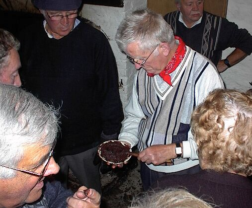
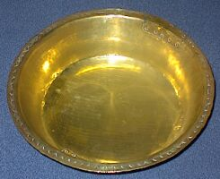

Me v'chin d'ertou' d'l'Hopita', mais chein qu'j'ai ouï et veu s'ra pour eunne aout' feîs. Annièt, i' faout que j'vos raconte eunne bordée d'nièr beurre.
Me v'chin d'ertou' d'l'Hopita', mais chein qu'j'ai ouï et veu s'ra pour eunne aout' feîs. Annièt, i' faout que j'vos raconte eunne bordée d'nièr beurre.
De vers le 22 du meîs d'Novembre, j'alli faithe eunne touânnée du bord des Fougères, quand j'vit l'boss des Ormes qui d'mandait à Papa: Veindr'ous m'bâillyi un coup d'main Jeudi au sé à faithe du nièr beurre.
J'pensi que mé, Caouan, j'ithait èttou et de bouanne heuthe dans la sérthée j'arrivi ès Ormes. J'entendit le mâle cat qui faisait miao miao, mais mé j'n'avais pas paeux d'li.
Dans l'appartement iou qu'nou z-avait allumèt bouan feu, y'avait un pannyi à lanchon qu'était pendu à la poutre. Vite j'me muche dedans. Bétôt la musique marchi, les cartes 'taient sûs la tablle, nou jouait à lou et à high, low, jack, gomme. Les aoutres touânnaient l'nièr beurre. Iun d'yieux chanti la chanson du chultivateur, Papa la cheinne du vin. Y'en avait iun tchi riait tout l'temps. Iun était v'nu du bord des Sts. Germains et l'aoutre du bu d'la rue.
Le boss passait avec sa boutelle et en dounait un lermin ès siens à tchi qu'il en pliaîsait. J'n'en vit pas un bousttre qui dît nennin. Ch'est qui y-avait du raide bouon cidre dans chutte jougue à chein que les aoutres disaient. Me, pouor' Caouan, j'n'en preint pas un lermin.
Bétôt, né v'là la tabble dréchies, unne démié-douzaine d'assiettèe d'gâche, et autant d'assiettes, autant dé sortes de gâches. Du café, du thée et du cidre, châtchun san goût.
Iun de ceux qui taient là s'mint à raconter un histouèthe de chasse. Ch'tait le bouan houmme Françouais qui tithit unne bécasse du bord du côti à Mess Langliais. Dans les près d'Hamtonne, d'un coup d'arme, maître Françouais abattit trente daeux pîvis et dans treîs aoutres coups, i' tuit daeux lapins et un lièvre. Du bord des Eclieuses, il abattit treîs canards d'un coup. Et le bouan-houmme tait mârri, car i' n'avait pus d'pion. Il né l'î resté que de la poudre et des caps. Il allait ramonter le fossé du bord de la Cornurie quand il apperchut des livres à mangi des poummes. Coumme i' n'avait pus de pion, i' dêhalli sa brioche et halli du cliou de d'souos ses bottes. I' chergi s'n'arme avec les cliou et bang! ne v'là qui tithe. Quatre des lièvres futent cliouès au poumi par les z-ouothelles et un aoutre s'n'alli sus treîs gambes. Auprès de la vieille forge, le bouan-houmme Françouais vit neuf perdris à gratter dans les fielles. Chutte faîs, coumme i' n'avait pus de clious à haller de souos ses bottes, i' preint la badjette de s'n'arme et tithe avec. Il en enfilit sept par les yiers. Ch'tait coumme unne brotchie d'héthans de Terreneuve!
Ne v'chin chein que Maîte John raconti et nou z-eut eunne bouanne bordée d'fun, car ne v'là qui n'est pas dit souos la fouai du serment, bein saeux.
Tchi fricot, bouannes gens, du canard, du picot, du pithot, du lard, du boeu, du lapin stewèt. Un boustre d'affrontèt eut l'toupé de d'mandé si chu lapin là n'tait pas un mâle cat. La patronne en fut mârrie. Y'avait des piclles de toutes les sortes et d'la salade de daeux sortes.
Aîdjous, garçons, bévez et mangîs, ne v'là d'la salade à l'huile et l'aoutre à la crême.
Bétôt, nou r'pâsse les z-assiettes, les femmes en hallèrent iune pour en mette daeux. Tch'est qui s'agit, dou, s'cria papa. Nou lî rêponnit: N'ayèz pas d'paeux. I' y-a unne assiette pour du podin et l'aoutre pour du fromage ou du cèleri, coumme i' vos pliaitha.
La patronne apporte un biau gros podin de fieu et bein d'aoutres. Aîd'jous, garçons, coppèe, sers nous le poudin d'rie, papa. Un miot d'podin d'poummes. Allons, la compagnie, le sien de citroule. Et té, sers le Corn Flour.
Et pis tch'est qu'ou z-allèz faithe des tarts et d'la g'lèe. Coumme iun s'fit, jamais nou z-avé veu unne tabble si bein garnie.
Et mé, pouor Caouan, qui viyait tout chouna et pouvé pas en avé un miot, pas maîme unne pinchie de sno de la bouête à papa.
Nou alli vée tch'est qu'nou faîsait l'aoutre bord pour que l'sien qui rêmoué ait san fricot à san tou.
Iun s'mint à touôner les verres, l'aoutre pâssi de la ficelle dans la hanne des tasses.
Quand l'boss apporti une grande piatlée qu'il enviait dans la pêle iun de ceux qui était là li demandi tchès qu'est chounna et l'boss li réponnit: Ch'est d'la colle a menuisier pour faithe le beurre coller!
Unne aoutre fais chu curieux demandi tchès qu'nou mettait dans la pèle et nous lis réponnit: ch'est unne piatlée de savon pour empêchi le beurré décliachit! N'en v'la encouo unne bouanne man Flip!
Nous offrit encouothe deux dégoûts pour se recauffé un miot.
Quand iun était à rêmoué le boss fut ramassé unne grande poutchie et il envia le tout dans, la pêle pas la pouque d'jia, et coumme nou dit au curieux: Ch'est du soda pour donné d'la couleur au beurre!

La patronne s'en vint avec sa souôtasse pour êprouvè le beurre, chein qu'ou fit daeusse-treîs feîs. Puis j'l'entendit qui s'fit: I' faout mette bas, le beurre est bein. Dans daeusse-treîs minutes, ne v'là eunne d'mié-douzaine d'hoummes alentou d'la pêle. Bétôt ne v'là la maîtresse qui veint avec eunne grand' bolle et ou remet et poudre et poudre.
Tch'est qu'v'là qui veur dithe? s'fit le chuthieux. Et le boss de l'y rêpondre: ch'est du pèvre pour erlevé l'goût.
La bolle viède, la maîtresse s'mint avec eunne p'tite bouteille à versé d'tchi, d'gout à d'gout, partout la pêle.
Et s'fit occouo eunne feîs le tchuthieux: Tch'est qu'est chounna, Missis? Ch'est des tchusiosités!
Achteu i' fallait mettre le beurre en pot. Les uns portaient les pots vièdes et l's'aoutres les siens qu'étaient plleins.
Le boss, eunne feîs la job finie, s'fit: Eh bein, garçons, j'vos r'mercie tous. Ché s'sa à la s'maine tchi veint, à meins qu'ou n'voulais resté à dêjuné avec mé.
Les uns s'en allèrent, car ils taient prèssis d'aller traithe lus vaques. Daeux ou treîs restitent à dêjeuner.

Ch'est mé, Caouan, qui tait content de pouver me dèhaller de d'dans man pagni, car v'là qui sentait trop à paison. Jamais de ma vie je me r'mettrai dans un pagni à lanchon.
J'éthais creu que la pêle éthait ieu un biau fond pour mé à litchi, mais nennin ou l'avait le fond 'bright' coumme de l'or quand le beurre fut hors.
Caouain
La Chronique de Jersey 11/2/1911
Viyiz étout: